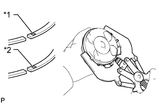

БЛОК ЦИЛИНДРОВ > ПОВТОРНАЯ СБОРКА |
| 1. УСТАНОВИТЕ РЕЗЬБОВУЮ ШПИЛЬКУ |
Вверните резьбовые шпильки.
| *A | для передней стороны | *B | для левой стороны |
| *C | для стороны масляного поддона | *D | для правой стороны |
| 2. УСТАНОВИТЕ ШТУЦЕР ПОДАЧИ МАСЛА № 1 В СБОРЕ |
Совместите штифт штуцера подачи масла № 1 с отверстием под штифт в блоке цилиндров.
Установите 4 штуцера подачи масла № 1 с 4 обратными клапанами.
| 3. УСТАНОВИТЕ ПОРШЕНЬ С ПАЛЬЦЕМ В СБОРЕ |
С помощью небольшой отвертки установите новое пружинное стопорное кольцо с одной из сторон отверстия под поршневой палец.
Медленно нагрейте поршень до температуры примерно 80°C (176°F).
Покройте поршневой палец моторным маслом.
Совместите передние метки поршня и шатуна, подсоедините шатун к поршню, а затем вдавите поршневой палец большим пальцем.
| *1 | Передняя метка (стрелка) |
| *2 | Передняя метка (выступ) |
Проверьте условия посадки поршня на поршневой палец. Подвигайте поршень вперед и назад по поршневому пальцу.
С помощью небольшой отвертки установите новое стопорное кольцо с другой стороны отверстия под поршневой палец.
| 4. УСТАНОВИТЕ НАБОР ПОРШНЕВЫХ КОЛЕЦ |
 |
Установите рукой пружину и маслосъемное кольцо.
| *1 | Место соединения катушки |
| *2 | Конец маслосъемного кольца |
|  |
С помощью съемника поршневых колец установите поршневые кольца № 1 и № 2 так, чтобы метки с кодами были направлены вверх.
| Кольцо | Метка с кодом | |
| № 1 | Для моделей с охладителем РОГ без DPF | NAA |
| Прочее | NAC | |
| № 2 | Для моделей с охладителем РОГ без DPF | N |
| Прочее | KD1 | |
| *1 | № 1 |
| *2 | № 2 |
 |
Расположите поршневые кольца таким образом, чтобы концы колец располагались, как показано на рисунке.
| *1 | Поршневое кольцо № 1 |
| *2 | Маслосъемное кольцо |
| *3 | Обмотка |
| *4 | Поршневое кольцо № 2 |
| *5 | Передняя метка (стрелка) |
| 5. УСТАНОВИТЕ ПОДШИПНИК КОЛЕНЧАТОГО ВАЛА |
Совместите выступ подшипника с канавкой под выступ блока цилиндров и установите на место 5 верхних подшипников.
Совместите выступ подшипника с канавкой под выступ в крышке подшипника коленчатого вала и установите на место 5 нижних подшипников.
| 6. УСТАНОВИТЕ КОЛЕНЧАТЫЙ ВАЛ |
Установите коленчатый вал в блок цилиндров.
Продвиньте коленчатый вал в одном направлении и установите одну упорную шайбу в положение шейки № 5 таким образом, чтобы смазочная канавка была направлена наружу.
Продвиньте коленчатый вал в противоположном направлении и установите другую упорную шайбу в положение шейки № 5 таким образом, чтобы смазочная канавка была направлена наружу.
Установите 2 упорных шайбы на крышку подшипника № 5 так, чтобы канавки были направлены наружу.
Установите на место 5 крышек подшипников коленчатого вала.
Вверните болты крышек подшипников коленчатого вала.
Нанесите тонкий слой моторного масла на резьбу и под головки болтов крышек подшипников коленчатого вала.
Установите и равномерно затяните в несколько приемов 10 болтов крышек подшипников коленчатого вала в последовательности, показанной на рисунке.
Отметьте краской переднюю сторону каждого болта крышки подшипника коленчатого вала.
| *1 | Метка, нанесенная краской |
| *a | Передняя сторона |
Затяните болты крышек подшипников коленчатого вала с поворотом на 90° в той же последовательности, которая показана на предыдущем рисунке.
Убедитесь, что нанесенные краской метки развернуты на 90° относительно исходного положения.
Убедитесь, что коленчатый вал вращается плавно.
Измерьте осевой зазор коленчатого вала.
| 7. УСТАНОВИТЕ ПОДШИПНИК ШАТУНА |
 |
Совместите выступ подшипника с канавкой шатуна или крышки шатуна.
Установите подшипники на шатун и в крышку шатуна.
| 8. ПРОВЕРЬТЕ ОСЕВОЙ ЗАЗОР КОЛЕНЧАТОГО ВАЛА |
 |
С помощью индикатора часового типа измерьте осевой зазор, двигая коленчатый вал вперед и назад с помощью отвертки.
| Параметр / Устройство | Заданные условия |
| Номинальное значение | 2,430 - 2,480 мм (0,0957 - 0,0976 дюйма) |
| Ремонтный 0,125 | 2,555 - 2,605 мм (0,1005 - 0,1025 дюйма) |
| O/S 0,250 | 2,680 - 2,730 мм (0,1055 - 0,1074 дюйма) |
| 9. УСТАНОВИТЕ ПОРШЕНЬ И ШАТУН |
Нанесите моторное масло на стенки цилиндров, поршни и поверхности подшипников шатунов.
Проверьте положение концов разреза поршневого кольца.
С помощью съемника поршневых колец вставьте в каждый из цилиндров узлы поршней и шатунов с соответствующими номерами таким образом, чтобы передняя метка на поршне была повернута вперед.
| *1 | Передняя метка (стрелка) |
Установите крышку шатуна на шатун.
Проверяйте соответствие номеров крышек шатунов и шатунов.
Совместите штифты на крышке шатуна со отверстиями под штифты на шатуне, после чего установите крышку шатуна.
Убедитесь, что метка внешней стороны на крышке шатуна обращена вперед.
| *1 | Передняя метка (выступ) |
 | Передняя сторона |
Установите крышку шатуна и закрепите ее болтами.
Нанесите тонкий слой моторного масла на резьбу и под головки болтов крышек шатунов.
Вверните и поочередно в несколько этапов затяните болты крышки шатуна.
Пометьте краской переднюю сторону каждого болта крышки шатуна.
| *1 | Метка, нанесенная краской |
| *a | Передняя сторона |
Затяните болты крышки шатуна с поворотом на 90°, как показано на рисунке.
Убедитесь, что нанесенные краской метки развернуты на 90° относительно исходного положения.
Проверьте, чтобы коленчатый вал вращался плавно.
| 10. ПРОВЕРЬТЕ ОСЕВОЙ ЗАЗОР ШАТУНА |
 |
С помощью индикатора часового типа измерьте осевой зазор при движении шатуна назад и вперед.
| 11. УСТАНОВИТЕ МАСЛОВПУСКНОЕ ОТВЕРСТИЕ БЛОКА ЦИЛИНДРОВ |